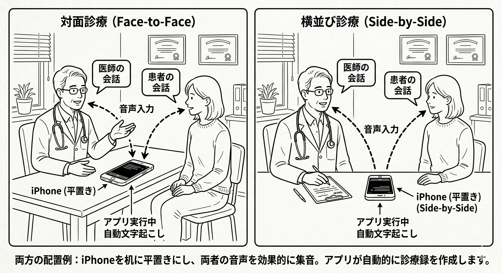
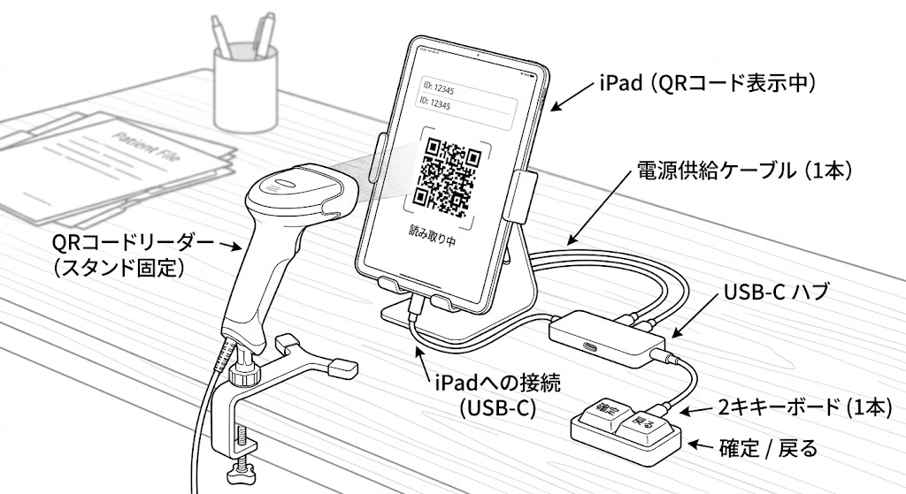
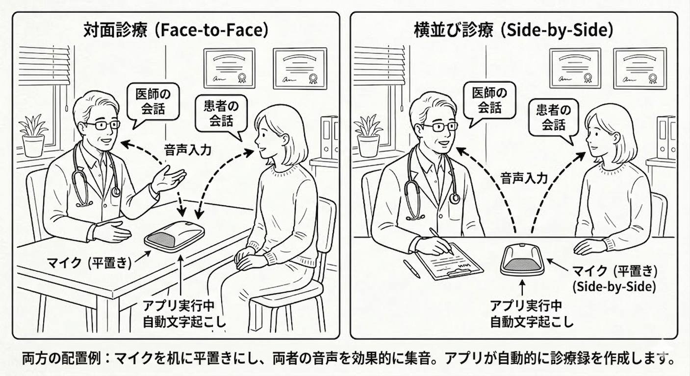

① セットアップガイド
端末の準備と接続方法
まずは手元にあるもので始めて、慣れたらステップアップ。QRスキャンは手持ちリーダーでも固定設置でも使えます。
1
まずはここから
追加機材ゼロまたは最小限。今日から使えます。
録音
スマホを机に置くだけ

- 1 スマホのChromeでK-Laboを開き、ログインする
- 2 医師と患者の間の机の上に画面を上にして置く
- 3 録音ボタンをタップして開始。話し終えたら停止
追加機材ゼロ。スマホ1台で今すぐ始められます。
カルテ連携
ハンディQRリーダーでかざす

- 1 QRボタンを押すと画面にQRコードが表示される
- 2 ハンディQRリーダーを画面にかざしてスキャン
- 3 電子カルテの入力欄にテキストが自動入力される
QRリーダー（USB接続）を電子カルテPCに繋ぐだけ。固定設置不要。
💡 QRコードリーダーはキーボードと同じHIDデバイスとして認識されます。USBメモリが制限されている医療機関でも、問題なく使用できます。
慣れてきたら
2
iPad固定設置で完全自動化
キーボード2キーで録音からカルテ入力まで手を画面に触れず完結。

※ QRリーダーはiPad画面に向けて固定し、電子カルテPCにUSB接続。QRコードが表示されると自動スキャンされます。
録音はどうする？
内蔵マイク：iPadのマイクで直接録音。追加機材不要。
Bluetoothマイク（推奨）：卓上マイクを机の中央に置いてペアリング。音質向上。

推奨セットアップ
スタンド ＋ Hub ＋ キーボード ＋ QRリーダー（固定）
診察中に画面を触らず、キー2つだけで全操作が完結します。
必要なもの
- ✅iPad（任意のモデル）
- ✅iPadスタンド（卓上固定タイプ）
- ✅USB-Cハブ（電源パススルー対応）
- ✅キーボード（有線またはBluetooth）
- ✅QRコードリーダー（USB接続・固定設置）
- ✅電子カルテPC（Windows）
1
iPadをスタンドに固定する
横向き（ランドスケープ）で目の高さに調整
横向き（ランドスケープ）で目の高さに調整
2
USB-CハブをiPadに接続する
ハブから電源アダプタも繋いで充電しながら使用
ハブから電源アダプタも繋いで充電しながら使用
3
キーボードを接続する
有線はハブのUSBポートへ。Bluetoothはペアリング
有線はハブのUSBポートへ。Bluetoothはペアリング
4
QRリーダーをiPad正面に向けて固定する
QRリーダーのUSBを電子カルテPCに接続。スキャン口をiPad画面に向けて設置
QRリーダーのUSBを電子カルテPCに接続。スキャン口をiPad画面に向けて設置
2キーで全操作が完結
●
録音・停止
開始 / 停止
+
▣
QR表示
QR自動スキャン
QRキーを押すとiPad画面にQRコードが表示され、正面のQRリーダーが自動スキャン。電子カルテに即入力されます。
対応状況: Windows電子カルテでの動作実績あり。Macの電子カルテは現時点で非対応です。
💡 QRコードリーダーはキーボードと同じHIDデバイスとして認識されます。USBメモリが制限されている医療機関でも、問題なく使用できます。
推奨構成についてのご注意
QRコードリーダーは機種によって読み取り精度や動作互換性が異なります。動作確認済みの推奨モデルのご使用をお勧めします。推奨構成の詳細はお問い合わせください。